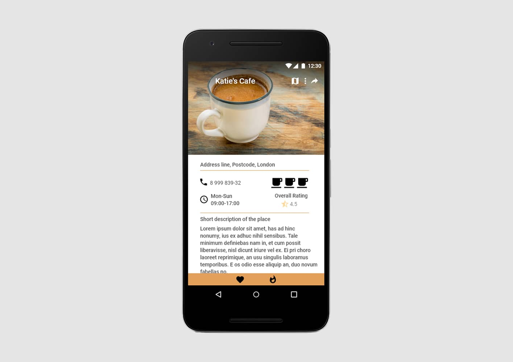

Baking App
Mobile / UX
intro
Blends was created as part of Udacity's Android Developer Nanodegree Program. The project is a showcase for what I have learned throughout the entire course.
Objective: build an app of my own design in two stages (design & plan, code build)
Duration: 3 weeks
Tools used: Android Studio, Adobe XD & Photoshop
‍Final product showcase: Android app that can is ready for submission to the Google Play Store
description
Most coffee house apps cover a very wide area of London and they don’t filter through the best places, offering details on everything that serves coffee, even franchises. Blends displays only small, independent coffee houses, all located in Central London. As the user walks around, they can get automatically notified about new or already known cafes; these notifications can also be deactivated as preferred.
features
- Add new cafes to the list of 'favorites' or 'want-to-visit'
- Search on the map for new coffee places
- Choose a cafe from the list to see its details (address, contact number, opening hours)
- Use the app's Widget to view cafe suggestions at a glance
- Give rating to each places
- Share favorite cafes with friends
project requirements
- JDK 1.8
- Android SDK
- Android Nougat (API 25)
- Latest Android SDK Tools (Android studio 3.0 canary) and build tools
implementation
As a requirement, this project is written using only Java.
Application integrates two Google services:
- Google Location service
- Google Map service
Data persistance
The app integrates SQLite for caching the locations chosen by the user, ContentProvider for data sharing between apps and Sharedpreferences to save all the settings made by the user (e.g. notifications). App uses a Loader to move its data to its views.
UI
All activities in the application are 'Resource' aware and handle the Resource data object provided by the
data layer to update the UI with data and the network state.
The UI is made of 3 distinctive views:
- Cafe List view: lists cafes for the area (select between favorites and want to try)
- Detail cafe view: contains details about each place (e.g. address, opening hours)
- Map Location View
screenshots
The full project can be found here